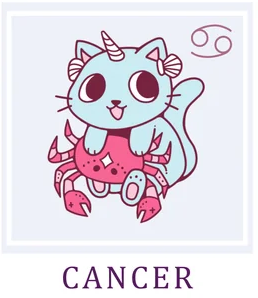

Рак/Cancer
Год начнется с испытания на прочность. Первые месяцы могут показаться довольно сложными и туманными, но главное —
не отчаиваться и не поддаваться унынию. Ваша ключевая задача — не совершить опрометчивых поступков до марта.
Действуйте осторожно, взвешенно и по возможности воздержитесь от кардинальных перемен в любой сфере жизни. Любое
решение будет требовать тщательного обдумывания, и спешка может сослужить плохую службу.
В первой половине года старайтесь обращать больше внимания на свое эмоциональное состояние. Это время заботы о
внутреннем мире. Подумайте, что служит для вас источником сил и позитивного настроя — будь то творчество,
прогулки на природе или тихие вечера с книгой — и старайтесь уделять этому как можно больше внимания. Вам важна
поддержка близких, но вы можете столкнуться с тем, что получить ее в нужном объеме не всегда удается.
Постарайтесь не сердиться на дорогих вам людей — они, возможно, сами переживают не самые простые времена. В этот
период крайне важно избегать громких ссор и острых противостояний, а мелкие недоразумения разрешатся сами собой,
если вы немного подождете.
Но после периода затишья вас ждет долгожданный прорыв! Конец весны и начало лета станут временем блестящих
профессиональных успехов. Вас ждет ясность: наконец-то станет понятно, чем вы хотите заниматься, и появятся все
возможности для реализации этих планов. Смело можно рассматривать предложения о смене работы или сферы
деятельности — звезды готовы поддержать ваши смелые решения.
Вторая половина года — это время не только подводить итоги, но и строить смелые планы на будущее. Не бойтесь
ставить высокие цели, мечтать о большем! У вас будет все необходимое — и ресурсы, и вдохновение, — чтобы
совершать по-настоящему важные и прекрасные вещи. Так что не сидите сложа руки — мир ждет вашей душевной
щедрости и творческой энергии. Действуйте!